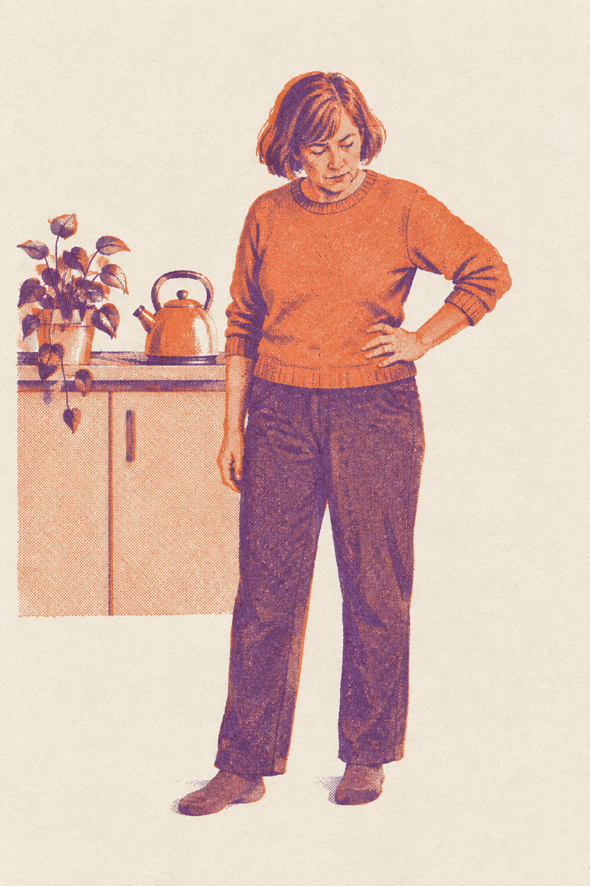
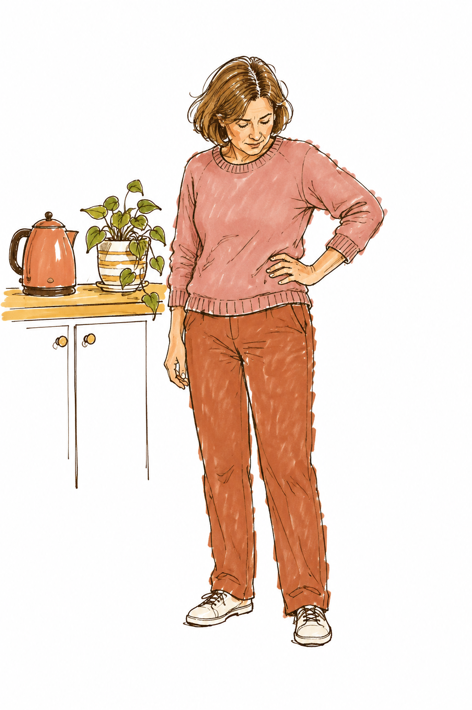
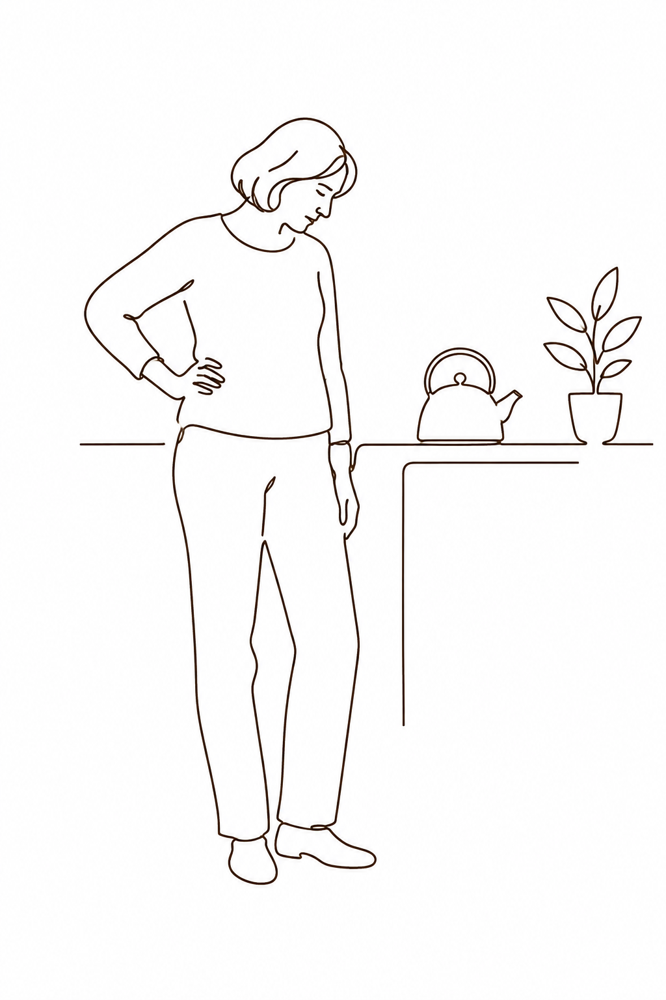

Keel launch: four new directions
Same story and copy as v1. Each direction changes the art, type, colour and how things move. The hook drawing in each one is a real gpt-image-2.5 test in that style; product moments are built in the style so you can judge them.
Cut Paper
Everything is torn and cut paper laid on a warm table: the woman, the plate, the labels. It feels handmade and premium, like a magazine spread that came alive.
Type: Fraunces 800, soft and a little wonky. Key words sit on torn terracotta strips.
Motion: stop-motion at 12fps. Pieces slide in and drop with a paper shadow; scenes change as a new sheet of paper slides over the old one. No camera whips.
Different body.

Two-Ink Riso
A risograph zine: only terracotta and plum ink on cream paper, with grain, halftone dots and slightly misaligned layers. It's the loudest and most social-feed of the four, and it reads well at thumbnail size.
Type: Anton, huge, all caps, stacked tight. Words print in one ink with a ghost of the other.
Motion: hard cuts on every beat. The two ink layers start out of register and snap together on the hit, and a print-roller wipe changes scenes. Grain flickers at 8fps.

walks.
Different
body.
Close it.
Her Journal
The film is her own diary. Lined pages, marker sketches taped in, highlighter, ticked boxes and the Keel emoji as stickers. It's the most personal of the four, and it shows how Keel fits into a real week instead of selling features.
Type: Gochi Hand, one handwritten family, so it reads as her writing, with a peach highlighter on key words.
Motion: the pen writes each line left to right, stickers slap on with a squash, the coach replies on a sticky note that peels in, and scenes change with a page turn. Upbeat but warm.
Different body.

Lighter session today. Protein at breakfast.
One Line
One unbroken line draws the whole film. It draws her, then without lifting it becomes the plate, the dumbbell, and finally the dot in the logo. Solid brand-colour fields flip on the beat behind it. Minimal and confident, like a poster series.
Type: Bricolage Grotesque 800, very large and tightly tracked, one family.
Motion: the line is the camera. It travels off one object and draws the next, and the background colour hard-cuts on each bar. Type slams in, oversized, then settles.
Different body.
